Lantern Run
Escort a refugee liner with twelve hundred souls and one bad engine to orbit. It doesn't stop, so neither do you.
Mini-boss HAILSTORMXF-9 Starlance · Technica 2026
A vertical space shooter that runs in your browser. Laser dogfights, screen-filling dreadnoughts, black holes that bend your shots, and the people you pull out of escape pods along the way.
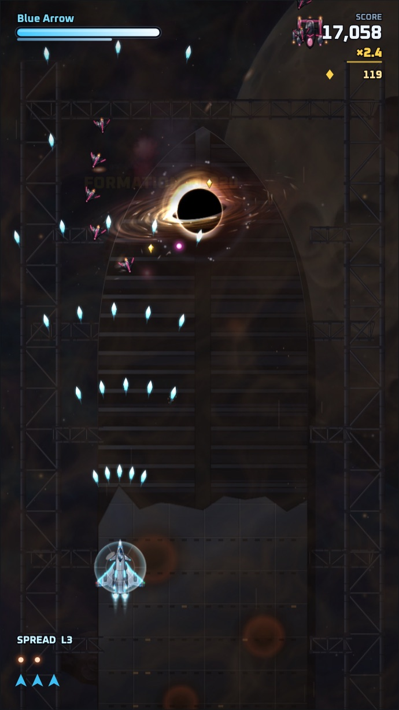
Prologue card · shown once, on a new save
Year 2291 · The story
Out of the Tartarus Rift comes the Nyx Armada, an alien fleet that worships the end of stars. Its warships tow captive black holes, called collapsars, and drop them on human stations and colonies like anchors. Its ruler, Hierarch Vael, wants one thing: a black hole big enough to swallow the Sun.
The carrier UNS Halcyon is all that stands at the Vesta Line, and its hangar holds two XF-9 prototypes. Commander Kade sends you, the test pilot of the XF-9 Starlance, against the whole Armada one strike at a time.
People you pull out of escape pods ask for help along the way. Every favor you fly for them teaches the Starlance a new skill.
Humanity · UNS Halcyon
The fastest jets humanity ever built. White and cyan for player one, graphite and gold for the friend who grabs the second stick.
The enemy · Nyx Armada
Graphite hulls with burning pink seams. Swarming jets, gravity siege engines, and a throne ship parked between two black holes.
Campaign route · Vesta to the Tartarus Rift
Each mission opens with a short radio briefing and ends against a boss that fills the top of the screen and breaks apart in stages.
A catapult launch off the Halcyon's deck into burning shipyards, and the sun cresting Vesta as RAZORBACK goes down.
Nyx jets are tearing up the Vesta yards. Halcyon launches in five.
Your lasers curve around a black hole to hit the jet hiding behind it. Gravity bends everything: your shots, theirs, and you.
They dragged a black hole to Kerr Station. It's eating the station alive.
Lightning lights the cloud canyon from the inside, ion clouds jam your guns, and then the storm's eye opens to stars.
There's a prison convoy in there. Our people. Let's go get them.
An eclipse slides over a blue giant while blades of starlight sweep the screen. You survive by hiding in the shadow of anything big.
Burn the harvester, Blue Arrow. Then we knock on their door.
You punch through the rift as the Halcyon's spinal cannon fires past you. The throne ship's final form collapses into a black hole you have to break.
Come then, little light. Every star ends in my hand.
Side stories · one radio choice each
Each side story ends in a mini-boss and one decision on the radio. What you pick decides which skill the Starlance learns and how that person's epilogue reads.
Escort a refugee liner with twelve hundred souls and one bad engine to orbit. It doesn't stop, so neither do you.
Mini-boss HAILSTORMDr. Osei's station is falling into a black hole. Save her crew or her gravity core. Past the horizon, nothing comes back.
Mini-boss TETHERThe veteran ace who flew the first XF-9 wants one sortie against the Nyx ace who shot down her whole squadron.
Mini-boss MANTISA Nyx defector's codes get you inside the foundry where black holes are grown from seeds. One seed is nearly ripe.
Mini-boss CRUCIBLEThe Tartarus Rift closed at 06:12 ship time.
The Halcyon turned for Earth.
THE END
The ending counts every person you rescued across the campaign, then shows one epilogue card per side story based on the choice you made. Fly the Lantern Run one way and Tamsin paints your callsign on her bow. Fly it the other and Patch's kid brother decides to become a mechanic.
Radio cast · procedural portraits, no image files
Story arrives in short radio lines you can read while dodging. Every character has a color, a portrait drawn in code, and a synthesized radio chirp.
Gameplay · portrait 9:16, auto-fire on
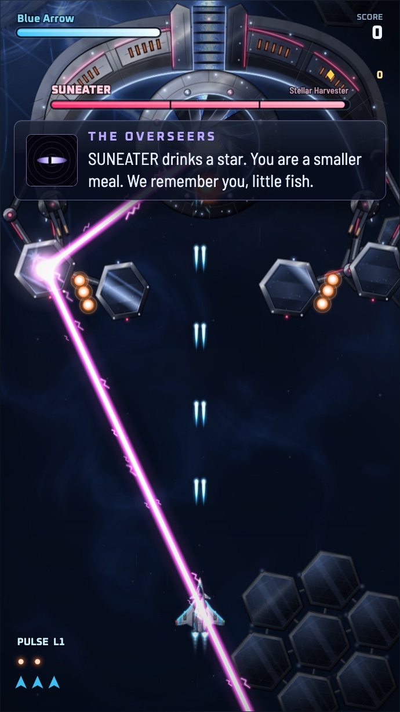
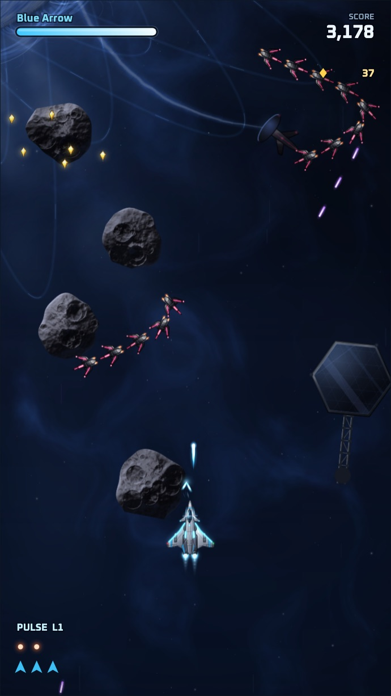
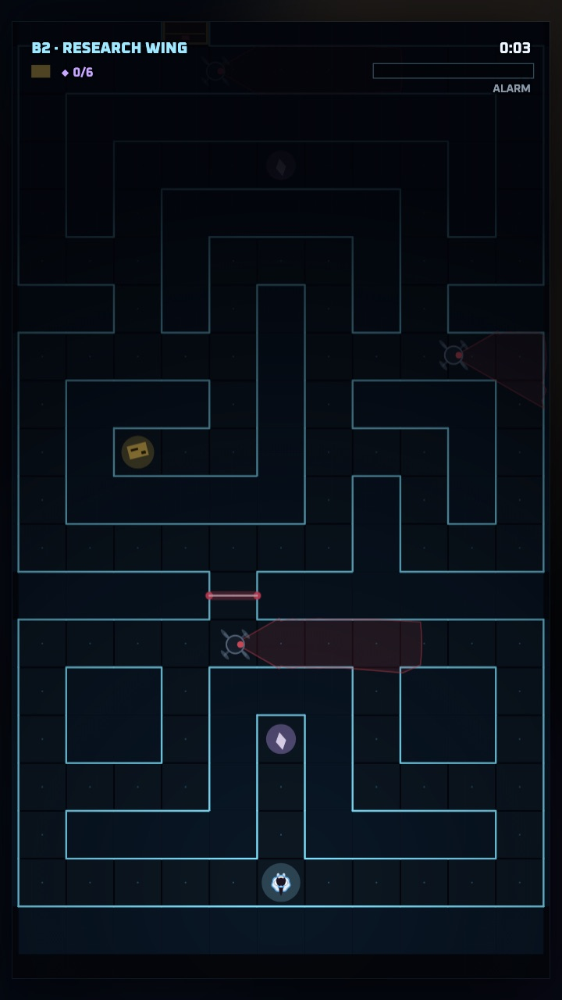
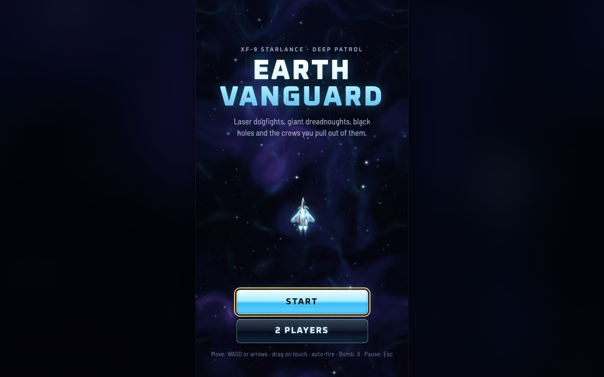
Twin pulse lasers become a wall of light, the spread fan widens to nine rays, and the lance beam swells from a needle to a pillar across five levels. Homing missiles and bombs on top.
Black holes that bend your shots, asteroid storms, ion storms, solar flares, mine fields and wormholes.
Escape pods drift through the crossfire. Fly low to scoop survivors out. Some of them start a side story.
Each boss loses turrets and plates, changes attacks at every health mark, and dies in slow motion.
A friend can take the gold XF-9B Sunlance at any time. One keyboard, two gamepads, or a mix.
On touch screens, drag anywhere and the jet follows your finger's motion, so your thumb never covers it.
Unlocked after Mission 1 · voice controlled
Riding along in the cockpit is Puff, your pufferfish best friend. Clear the first mission and Puff gets a game of its own: swim home through Earth's polluted ocean.
You steer with your voice. Get loud, with an "ahh", a hum or a whistle, and Puff puffs up and floats. Go quiet and Puff shrinks and sinks under floating garbage patches. Puff tunes itself to your voice first, so a soft hum works as well as a scream. The mic only measures loudness inside the page; nothing is recorded or sent.
Every game over shows a real ocean-pollution fact.
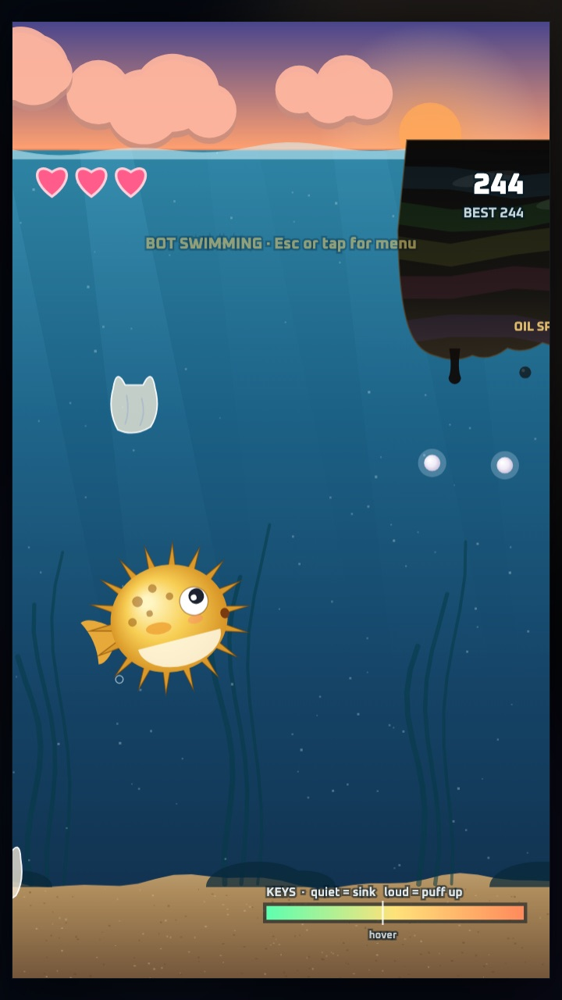
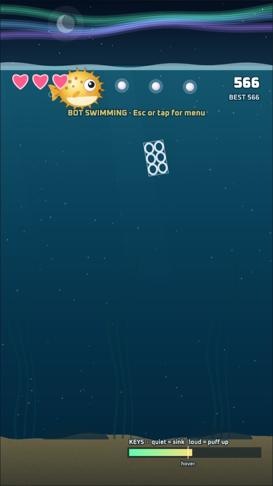
How to play
| Action | Keyboard (solo) | Gamepad |
|---|---|---|
| Move | WASD or arrow keys | Left stick / D-pad |
| Fire | Automatic, or Space | Automatic |
| Bomb | X Q K | A |
| Skill | C E L | X or B |
| Focus | Shift | LB / RB |
| Pause | Esc or P | Start |
| Puff up | Make a sound, or hold Space | Right trigger |
Playable now
Designed, in progress
Plain JavaScript, HTML canvas and the Web Audio API. No frameworks, no image or sound files: every jet is drawn in code and every sound is synthesized. Black-hole lensing runs on WebGL. The whole game ships as one HTML file.
Flight crew · Technica 2026
Four people built Earth Vanguard at Technica 2026.
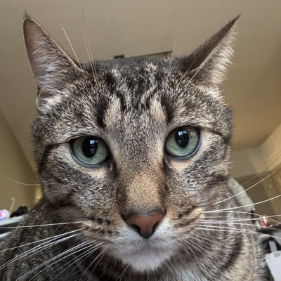
Pilot 01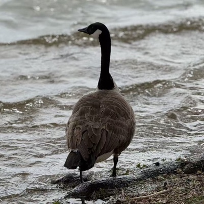
Pilot 02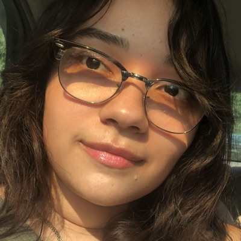
Pilot 03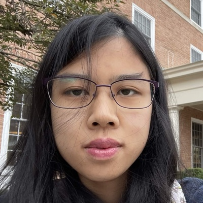
Pilot 04